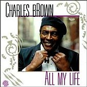
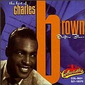

|
 ALL MY LIFE - Bullseye, 1990
Performers
- Kev Blevins : Drums
- Charles Brown : Organ, Piano, Vocals
- Ruth Brown: Vocals
- Danny Caron : Guitar
- Keith Copeland : Drums
- Dr. John : Organ, Piano, Vocals
- Frank Henry : Sax (Baritone)
- Haywood Henry : Sax (Baritone)
- Ron Levy : Organ
- Earl May : Acoustic Bass, Bass
- David Sholl : Sax (Baritone)
- Clifford Solomon : Sax (Alto), Sax (Tenor), Tambourine
-
 Driftin' Blues (Best Of) - Collectables Records
|